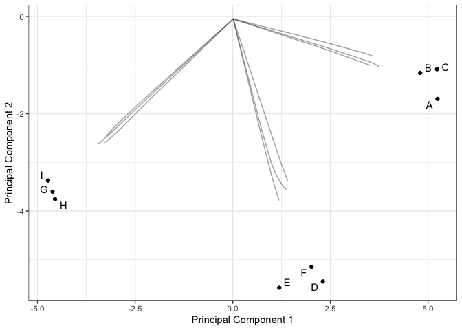
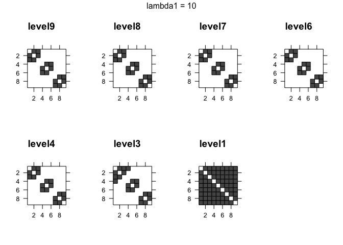

Method
This repository provides an implementation of the MGLasso (Multiscale Graphical Lasso) algorithm: a novel approach for estimating sparse Gaussian Graphical Models with the addition of a group-fused Lasso penalty.
MGLasso is described in the paper Inference of Multiscale Gaussian Graphical Model. MGLasso has three major contributions:
We simultaneously infer a network and estimate a clustering structure by combining the neighborhood selection approach (Meinshausen and Bühlman, 2006) and convex clustering (Hocking et al. 2011).
We use a continuation with Nesterov smoothing in a shrinkage-thresholding algorithm (
CONESTA, Hadj-Selem et al. 2018) to solve the optimization problem .We show numerically that
MGLassoperforms better thanGLasso(Meinshausen and Bühlman, 2006; Friedman et al. 2007) in terms of support recovery in a block diagonal model with few sparsity inside blocks. The clustering performances ofMGLassocan be improved by the addition of a weight term to calibrate the variable fusion regularizer.
To solve the MGLasso problem, we seek the regression vectors that minimize
J_{\lambda_1, \lambda_2}(\boldsymbol{\beta}; \mathbf{X} ) = \frac{1}{2} \sum_{i=1}^p \left \lVert \mathbf{X}^i - \mathbf{X}^{\setminus i} \boldsymbol{\beta}^i \right \rVert_2 ^2 + \lambda_1 \sum_{i = 1}^p \left \lVert \boldsymbol{\beta}^i \right \rVert_1 + \lambda_2 \sum_{i < j} \left \lVert \boldsymbol{\beta}^i - \tau_{ij}(\boldsymbol{\beta}^j) \right \rVert_2.
MGLasso package available on CRAN is based on the python implementation of the solver CONESTA available in pylearn-parsimony library.
Package requirements
- Install the
reticulatepackage.
install.packages('reticulate')- Check if Python engine is available on the system
reticulate::py_available()- If not available
reticulate::install_miniconda()- Install
MGLasso
install.packages('mglasso')- Install
MGLassopython dependencies
mglasso::install_conesta()An example of use is given below.
Illustration on a simple model
Installation
library(mglasso)
#> Welcome to MGLasso.
#> Run install_conesta() to finalize the package python dependencies installation.
install_conesta()
#> mglasso requires the r-reticulate virtual environment. Attempting to create...
#> virtualenv: r-reticulate
#> Using virtual environment 'r-reticulate' ...
#> + '/Users/doedmond.sanou/.virtualenvs/r-reticulate/bin/python' -m pip install --upgrade 'scipy == 1.7.1' 'scikit-learn'
#> Installing pylearn-parsimony
#> pylearn-parsimony is installed.Simulate a block diagonal model
We simulate a -block diagonal model where each block contains
variables. The intra-block correlation level is set to
while the correlations outside the blocks are kept to
.
library(Matrix)
n = 50
K = 3
p = 9
rho = 0.85
blocs <- list()
for (j in 1:K) {
bloc <- matrix(rho, nrow = p/K, ncol = p/K)
for(i in 1:(p/K)) { bloc[i,i] <- 1 }
blocs[[j]] <- bloc
}
mat.correlation <- Matrix::bdiag(blocs)
corrplot::corrplot(as.matrix(mat.correlation), method = "color", tl.col="black")
Run mglasso()
We set the sparsity level to
and rescaled it with the size of the sample.
X <- scale(X)
res <- mglasso(X, lambda1 = 0.2*n, lambda2_start = 0.1, fuse_thresh = 1e-3, verbose = FALSE)To launch a unique run of the objective function call the conesta function.
temp <- mglasso::conesta(X, lam1 = 0.2*n, lam2 = 0.1)Estimated clustering path
We plot the clustering path of mglasso method on the 2 principal components axis of . The path is drawn on the predicted
’s.

Estimated adjacency matrices along the clustering path
As the the fusion penalty increases from level9 to level1 we observe a progressive fusion of adjacent edges.
plot_mglasso(res)
Reference
Edmond, Sanou; Christophe, Ambroise; Geneviève, Robin; (2022): Inference of Multiscale Gaussian Graphical Model. ArXiv. Preprint. https://doi.org/10.48550/arXiv.2202.05775